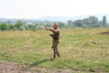
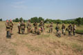
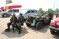
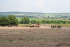
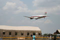
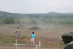
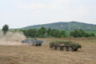
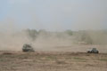

2006.06.25., vasárnap
tomcat
blog
droidzóna
levrov
No, hát megvolt az idei buzifelvonulás. Sokak várakozásával ellentétben nem rontottunk közéjük harckocsival, pedig elég sokan várták volna ezt. Ideje fellebbenteni a fátylat: mi az, amivel két napja, úgymond, megfenyegettem a felvonulás szervezõit, és végül miért nem történt semmi?
Persze a buzipártiak most diadalmasan ünneplik gyõzelmüket, miszerint hogy lám, mégse mertünk csinálni semmit, csak a pofám járt, bezzeg õk nem ijedtek ám meg, õk tudták, õk gyõztek, haha. Igen, kedves buzeránsok - de azt is hozzáteszitek-e, hogy a figyelmeztetés nyomán évtizedes negatív rekordot döntött kis felvonulásotok részvételi aránya? Hogy a bejelentett várható létszámnak a fele sem volt ott, tehát soha ilyen kevesen nem voltak? És erre a maroknyi "keménymagra" is a BRFK teljes mozgósítható állománya vigyázott, miután felvetettem, hogy talán nem kellene ezt csinálni, mert baj lesz? Hát ez volt a cél.
Ennyit akartam elérni: hogy minél kevesebben legyenek. Sikerült is. A figyelmeztetés futótûzként terjedt el a melegkommunkákban. Érdekes módon - legalábbis a különféle melegoldalak fórumát elnézve - elég sokan nem is azért nem mentek el, mert tartottak valamiféle támadástól, hanem mert osztották azt a véleményem, hogy ez így nem más, mint a többség provokálása, magamutogatás, szánalmaskodás. Ez a helyes irány: mert azt is megtehettük volna, hogy összeszedünk száz-százötven keményebb emberkét, és egyszerûen lerohanjuk a menetet. Ne legyenek illúzióitok, bármikor lenne ennyi ember, és nem is feltétlenül neonácik. Ebbõl jó néhányan gond nélkül odavágják a Molotov-koktélt is, ha kell. De ez nem történt meg, helyette csak ez a blogbejegyzés volt, és nem bántottunk senkit. Az a pár túlbuzgó fiatalember, aki beszaladt a tömegbe lökdösõdni, nem a Káoszbrigádokhoz tartozott, magánakció volt. De ezt is lehet jelnek tekinteni: tavaly nem volt ilyen, most már van. El fogtok jutni odáig, hogy nem csak pár hülyegyerek jön taszigálni titeket, és ehhez nem is lesz semmi közöm.
Hiába jelentik ki nagy nyeglén a szervezõk, hogy nem félnek semmitõl, követelik az úgynevezett jogaikat, és tesznek úgy, mintha nem egyszerûen mások, de sokkal tutibbak is lennének a hülye heteróknál. Hiába vannak meggyõzõdve róla, hogy valójában õk a többség, és jelentik ki, hogy Magyarországon négymillióan vannak. (Azért kíváncsi lennék, ki mérte ezt fel így...) Ez volt az utolsó olyan buziparádé, ami békésen vonulhatott. A következõvel már tényleg bajok lesznek.
De most nem történt semmi. Olvassátok el a három nappal ezelõtti "fenyegetést". Sehol sem írtam, hogy tenni fogok bármit is, vagy azt, hogy valamiféle rendzavarásra készülnénk. Annyit írtam: ha a tüntetés elindul, súlyos következményei lesznek. Liberálisainkra jellemzõ, hogy meg sem fordult a fejükben, hogy talán õk okozzák ezt a következményt. Talán nem az lesz, hogy valaki megdobálja õket, hanem hogy õk okoznak valamit. Nem, õk csakazértis teljesítik szent küldetésüket az "idióta zsebnácik" ellenében. (Azt azért megjegyezném, hogy összetartásukat hangsúlyozva felvonulgatni éppen a nácik szoktak.) Abba nem gondolnak bele a fõbuzik, hogy mivel járnak az õ liberális eszméik, hová vezetik a társadalmat, ha a devianciákat erénynek kiáltják ki, ha a társadalom, a család egyik alapintézményét, a házasságot puszta jogi formasággá silányítva azt az öröklés és a közös bankhitel felvételének lehetõségeként kezelik. Tudják is ezek, mi a házasság! De hát manapság mindenki modern, okos és felvilágosult, õk meg aztán fõleg és pláne. Na, ez az, amitõl ezer rendõr sem védhet meg - az elbutulás, az agymosás, a lelkesedve vágóhídra menetelés.
A szellemi környezetszennyezõkkel éppen úgy nem lehet megértetni, mit tesznek, mint a közönségesekkel. A faszparaszt nem ért a szép szóból. Tehát vagy otthagyják, vagy leütik. Ha erõszakoskodik és mások értékeit pusztítja, általában az utóbbi történik.
Na, de ennyit a buzikról. Ép lelkû ember inkább szeresse a nõket, mondjuk így. S most nézzük, hol voltunk, amíg ezek a seggüket rázták az Andrássy úton. Amire egyébként érdekes módon már a média sem volt kíváncsi...
Én közben Tatán jártam, a szomódi katonai gyakorlótéren, ahol Szent László, a katonák védõszentjének napján nagy-nagy látványosságot rendezett a Magyar Honvédség és néhány lelkes hagyományõrzõ csoport. Buzifelvonulás helyett tehát fegyverbuzi-felvonulásra mentem. Meleg, hát az ott is volt. Nézzük, mit láttunk.
Ezek itt mi vagyunk: BiG és NTami, akik a vonaton állni kényszerültek, csakúgy, mint eMM, aki még a képre sem került rá
Ez lennék én
A tatai állomáson ez az Ural fogadott bennünket
Ezzel fuvarozták ki a beérkezõ nézõket a helyszínre
Egészen kicsiket is
A laktanya

Mintha egy kicsit több civil lenne, mint legutóbbi ittjártamkor
A BTR-80A egy ellenõrzõ-áteresztõ pontot õrzött

Ki is volt írva, hátha valaki nem látná
Õk pedig ellenõriztek és áteresztettek
Jöttek a németek
Ellenõrizték és áteresztették õket. Végül is ezért hívják "ellenõrzõ-áteresztõ" pontnak, nem?
Arra az esetre, ha valaki ellenõrzés nélkül akarna áteresztõdni, ott volt ez a PKM
A mezõ túlvégén épp a délutáni II. világháborús hadijáték próbája folyt. Két T-34/85-ös körül egy rakás orosz egyenruhás fiatalember rohangált.
Roham
Ott vannak a németek és a magyarok

Eldobják a nemgránátot
Ez a T-34-es éppen ki van lõve
Magyar katona osztja a muszkákat
Az oroszok nyomában szaladva futottam össze Tõrös Istvánnal, aki szintén pár megapixellel felszerelkezve települt ki az elsõ vonalba. Egyébként nem sokan éltek a meghirdetett lehetõséggel, hogy a próba ideje alatt be lehet menni, lehet fényképezni. De legalább nem sokan voltunk láb alatt.
PaK-40/75. Ugyanez volt ott legutóbb Dunaharasztin is. De ez nem meglepõ, hiszen a felszerelések és a katonák is nagyrészt ugyanazok voltak - ezekbõl nem sok van manapság
Száz méterrel hátrébb a németek várták, hogy felmenthessék a magyar állást
Aknavetõ közelrõl

Orosz turista
A németek közben békésen szedték a cseresznyét
Páncélgránátos
PaK hátulról

Pirotechnika
Magyar puskás csatár
Schwarzlose géppuska. BiG apjának emlékei szerint nem is ez, hanem a 8 mm-es Gebauer géppuska hozta frászba az oroszokat. Ahol megszólalt, mindjárt abbahagyták a hurrázást.
Tõrös István
Karabély
Egy másik puskás csatár
A géppuskás születésnapjára egy MP40-est kap
Az árnyékban egy Kübelwagen pihent gazdáival. Elmesélték a kocsi történetét is. Valamikor a háború után Olaszországból jött vele valaki Magyarországra, akit nem engedtek haza. A kocsit egy parasztbácsi szerezte meg, és - horror - citromsárgára festette. Pár évvel késõbb befalazta a házának egy üres szobájába, mert szóltak neki, hogy ez a járgány nem politikailag korrekt. Évekkel késõbb tökéletes állapotban került elõ.
Állítólag valahol Magyarországon van elásva egy teljesen ép Tiger tank is. A visszavonuló németek ásták el, miután kifogyott belõle az üzemanyag, és nem volt robbanóanyaguk, hogy megsemmisítsék. A hetvenes években állítólag egy parasztember kiásta, mûködött is - saját lánctalpán mászott elõ a gödörbõl - de a politikai viszonyokra való tekintettel figyelmeztették, hogy kurva gyorsan temesse vissza. Nos, ez lett volna a világ egyetlen mûködõképes Tigrise. Mindenesetre talán meg lehetne találni ismét - ha valaki meg akarná keresni. Nagy látványosság lenne.
A németek roppant vidámak voltak. Az oroszok kevésbé, õk már vagy negyvenedszer próbálták el az ötszáz méteres rohanást a tûzõ napon.
Míg azok szaladoztak, õk jól elmotorozgattak

Közben a magyarok szentségeltek a kevés lõszer, a folyton lerohadó technika, és a teljesen szétcsúszott szervezés miatt
És közben cipelgették a géppuskát

A németek élvezték a napsütést és beszélgettek
König ezredes, személyesen

"Ha én náci lennék..."
MG42 a barátunk
Odaát meg biztos keresik
Ez itt egy valódi Sturmgewehr, bizony. Kézbe is lehet venni, csak vigyázni kell vele, ugyanis mûködõképes. Egy kútban hevert pár éven át, aztán a Mafilm fegyvertechnikusai életre pofozták. Közelebbrõl nézve kicsit ütött-kopott, de kétségkívül valódi.
Mellesleg motorok
Rajvonal
Az elsõ Európai Unió védelmi erõi
MP40
Megint jöttek az oroszok
Propagandafotók
Az oroszok betörtek a magyar állásokba...
... aztán kitörtek és visszavonultak
A magyarok hátrébb vonták a géppuskát...
... aztán újból elfoglalták a helyüket
A németek pedig lelkesen nézegették a mûsort a puska mögül.
Kicsit arrébb: BTR-152 lövészpáncélos az ötvenes évekbõl

A végsõ harceszköz
T-55AM harckocsi, az orosz T-54/55 magyar továbbfejlesztése
Ez pedig az eredeti T-54
PT-76 úszóképes könnyûharckocsi
A T-54 belülrõl. Alig fértem bele.
A PT-76 rövidesen elvonult a gyülekezési körletébe, mert hamarosan egy mûsorszám fõszereplõjeként kellett porondra lépnie
A T-54-es is követte...
... majd a BTR-152-es
BiG-gel bemásztunk az ott maradt T-55AM-be

Ez itt a parancsnoki munkahely. Elõttünk, kicsit lejjebb az irányzó helye. Jobbra lenne a töltõkezelõ, legelöl pedig a vezetõ ülése, ahol BiG kuporgott. A számgombos szerkezet a lézeres lõelemképzõ vezérlõpanelje.
A nagy zöld gombbal indul a háború
Csõfar
A gyakorlótéren közben feltûnt egy másik hagyományõrzõ társaság, a Magyar Honvédség huszárai
Ellenség híján egy kicsit zavarodottak voltak, de hamar kitalálták, merre kellene menni
És mentek...
A statikus sor mellett mûködött a fegyversimogató. Ez itt például egy Fagot páncéltörõ rakéta.
Fegyvergyári selejt
Az ilyen sátrakban mindig ezerszám tolonganak a lelkes civilek, akik alig várják, hogy kézbe vehessék és csettegtethessék a legkülönfélébb hadieszközöket - ez itt egy Szép mesterlövész-puska - és elõadják, hogy ki mire szeretne lõni vele, ha neki egyszer lenne egy ilyenje otthon. Ez az úriember például az anyósát jelölte meg leküzdendõ célként.
RPG. A fénykép elkészülte elõtt pár perccel három pasas szerencsétlenkedett vele, sehogy sem tudván rájönni, melyik az eleje és melyik a vége. A katonák csendesen mosolyogtak. Muszáj elviselni az ilyesmit, különben oda a civilekkel való kiváló kapcsolat.
A statikus soron megtekinthetõek voltak mindenféle teherautók...
... páncélozott felderítõ harcjármûvek...
... tüzérségi mûszerek...
Kukucs!
... illetve a Magyar Honvédség legújabb beszerzése, a BTR-80-asra épülõ "Gekkó" tüzérségi felderítõ jármû. Tetején, a torony helyén egy lézeres távmérõ látható.
Odabent pedig az Árpád M2 tûzvezetõ rendszer konzoljain látható, hogy mit lehet szétlõni és hogyan

Bár jobb híján csak ezzel lehet lõni: 152 mm-es, vontatott D-20 ágyútarack
Malac
BTR-80 alapváltozat
Konkursz rakétákkal megpakolt BRDM-2

30 mm-es gépágyúval felszerelt BTR-80A
Mûszaki mentõ T-72-es harckocsi
PTSZ-M úszó harckocsi
T-72-es
Van ám neve is!
A huszárok közben jobb híján egymást támadták meg, jó messze a közönségtõl, nehogy valami látsszon belõlük
Közben ott volt a Fakabát Rt is. A rendõrségi felszámolók is tartottak bemutatót, errõl azonban lemaradtam, mert a második világháborús cuccokat fotózgattam
Civil tulajdonú veteránjármûvek kiállítása

Megjöttek az amerikaiakok is!
Ural motor - ismét gyártják
Ilyen lenne, ha vennék egyet
Azért akadt itt veterán motor is
Ebbõl a Jeep-bõl harsogva áradt a The Longest Day címû film fõcimzenéje
Csepel D-532 tûzoltóautó
Csepel híradókocsi
Harci MZ
Közben a huszárok még mindig produkálták magukat. Valami marha biztos kitalálta, hogy rájuk is vonatkozik a biztonsági távolság. Ellenség nem volt, így egymással kardoztak.
Egy nappal korábban 70 kilométeres teljesítménytúra indult Székesfehérvárról Tatára. Ennek gyõzteseinek jutalmazására szolgált ez a nagy halom serleg és emléklap.
Harcmûvészeti bemutató
Az úr egy darab vasat fog szétkaratézni
Puff!

Nem sikerült. Egy darabig még ütötte, aztán bemondták, hogy sajnos a kolléga rosszul fogja a vasdarabot, de amúgy menne.
Megpróbálta a téglákra letéve is, de így se ment.
A következõ mûsorszám keretében egy fekvõ kolléga hasára beton járólapokat helyeztek...
... aztán hoztak egy bazi nagy samut...
Kroccs!
Ezután megtekinthettük, hogyan lehet észrevétlenül leszúrni a gonosz ellenséget.
Az utolsó ellenség még gonoszabb volt, mert õ azt is tudta, hogy védje meg magát.
A parancsnokság a sátor alól figyelt
Látogatás a Vörös Hadseregnél

Ez itt egy BA-64 (Bronyevaja Avto, azaz lövészautó, bár az elsõ tippem a Bisztrohodnij volt) páncélautó, ami végül nem nagyon szerepelt, mert nem tett volna jót neki a zötyögõs mezõn való rohamozás
Egy kezdetlegesebb közelharc-eszköz
Orosz páncéltörõ ágyú is volt
Meg vidám "orosz" katonalányok. Ezeken a hadijátékokon több hagyományõrzõ kör is képviselteti magát, mindegyik másféle hadseregre "szakosodva." Valamennyiükkel elbeszélgetve az is kiderült, hogy a németeknek öltözött fiúk közül néhányan, hogy is mondjam, sokkal inkább szó szerint értik a "hagyományõrzés" szót, mint gondolnánk...
Egyszer csak jöttek a harckocsik
Tessék élvezkedni!
Kissé vegyes összetételû a társaság
Az amerikai jármûvek most azt játszották, hogy õk lend-lease cuccok
BTR-152 közelrõl
Willis Jeep
GMC teherautó
Kissé rozzant Maxim géppuska
Közben megkezdõdött a hadijáték sokadik próbája, ami máris egy csomó lõszer eldurrogtatásával járt. "Azért remélem, szólnak, ha már nem csak próbálunk, nehogy úgy járjunk, mint a múltkor!" - jegyezte meg késõbb egy magyar katona.
Ez az ágyú teljesen mûködõképes volt, itt láthatóak hozzá a "malacok" is - természetesen csak pirotechnikai töltettel
Kicsit arrébb állt egy másik ágyú is
BA-64 ismét
A nagy meleg elõl rövidesen behúzódtunk egy álcázott D-20 állásba, és jól eldumáltunk a katonákkal, akik már nagyon unták a hülye kérdéseket feltevõ apukákat, anyukákat. Mi csak azt szerettük volna tudni, hogy ez a képlet mit jelent, biztosan fontos, ha ekkora betûkkel írták fel a lövegpajzsra, de nem tudták. Végül megegyeztünk, hogy ez biztosan a roppant alacsony találati esélyre figyelmeztet abban az esetben, ha a lövedék kezdõsebessége 0.
BiG vetít valamit egy csapat arra tévedt kölyöknek
Rövidesen megkezdõdött a második világháborús hadijáték. Az 1944 március 19-én ezen a környéken zajlott hadieseményeket idézték fel. Érdekes, hogy ezek apróságoktól eltekintve csaknem tökéletesen megegyeztek a Dunaharaszti környékén tavaly õsszel lejátszott, állítólag ott történt eseményekkel.
Különleges újdonság volt ez az SdKfz lövészpáncélos, amely Csehországból került ide, és még sohasem szerepelt
A forgatókönyv: a magyarok megszállják az állást...

...a németek jönnek erõsíteni...

... aztán jön egy magyar tábornok, megszemlélni a védelmi elõkészületeket. Dunaharasztin ez még német volt.
Aztán jön az elõretolt orosz osztag, rálõnek a tábornokra ("aszentségit", üvölti erre a szárnysegéd, és pánikszerûen elmenekülnek), aztán az orosz aknavetõsök megszórják az állást.
A dunaharaszti mûsor során elmaradt találatok itt már sikerülnek
Az elmaradhatatlan Po-2-es elvégezte a szokásos felderítést, aztán bombázott egy kicsit, végül lelõtték. Légvédelmi gépágyú most nem volt, helyette puskával kapta meg a magáét. A magyar felségjelet azért mégiscsak lefesthették volna...
És máris itt jönnek a gárdagépesített fiúk ügyesen, jól
Persze az egyik tank megint aknára futott, a másikat meg kilõtték. Sose sikerül nekik.
A gyalogság nem adja fel, pedig most még vörös zászlót sem hoztak, hogy lelkesítsen
A németek visszalövöldöztek, mire az oroszok visszavonultak.
A hadijáték után megérkezett a Kármán Tódor nevû Li-2-es, és ledobált pár ejtõernyõst

Biztosan észrevették fentrõl, hogy milyen szar alapobjektívvel fotózom, és lejöttek ilyen alacsonyra, hadd csináljak jó képeket. Köszi.
Szuvenírárus

A következõ mûsorszám egy 1956-os hadijáték volt, melyben a BTR-152-es, a T-54-es és egy halom gyalogos vett részt. A kommentárok kissé nehezen voltak érthetõek onnan, ahol mi álltunk, és sajnos nem is volt túl látványos a dolog - a katonák elszaladtak, lõdöztek egy kicsit, aztán visszaszaladtak, beszálltak és el.
Az "1956-os hadijáték" egyébként is egy kicsit különösen hangzott, hiszen 56-ról nem annyira a nyíltszíni ütközetek jutnak az ember eszébe
Közben Robin talált egy régi, rozsdás kardpengét. Bizony, régen használják már ezt a gyakorlóteret.
A következõ mûsorszámot a tatai lövészek szolgáltatták négy BTR-80-assal
Volt lövöldözés, robbantgatás, meg durrogtatás a 30 millis gépágyúval
Meg persze változatos színû ködgyertyák

BTR-80, küldöm azoknak, akik szeretik
Ezután a Magyar Honvédség - pontosabban Magyar Néphadsereg - hadrendjébõl már kivont eszközök bemutatója következett
Jött ismét a T-54-es
Jó nagy port vert fel, fuldoklottunk is rendesen

Showelemként átrongyolt a gyakorlótér közepére vontatott, roncs Opelen, de ezt a portól alig lehetett látni
T-55AM
Kis szünet következett, míg a gyakorlótér túlvégében felrobbantottak valamit. Magyarázat nem volt, valószínûleg ennek egy korábbi program során kellett volna robbannia.
Hamarosan megérkezett a Hunyadi Mátyás Harckocsi Zászlóalj (tudom, kötõjellel kellene írni, de hát így írják hivatalosan) egy szakasza, négy T-72-essel, és valós harci manõvereket mutattak be
A por taktikai jellegû felverésén kívül láthattuk a ködfejlesztõ berendezés mûködését, hallhattuk, milyen az, amikor olyasvalaki haragszik ránk, akinek 120 mm-es lövege van, és megtekinthettünk egy szétbontakozást, egy vonalba fejlõdést és egy szakaszössztüzet.
Ez itt egy vonalban támadás
Amire a CASCO nem vonatkozik...
Varsói Szerzõdés-propagandafotó
Itt éppen visszafordulnak, mert mögöttük ellenség tûnt fel

Köd, por és kilapult autók
Ezen a roncs Fordon is átmásztak egyszer
A ködfejlesztõ egyébként közönséges gázolajjal mûködik, amit a forró kipufogócsõbe fecskendeznek
Háttérképek tankbuziknak
Végül a fiúk kiszálltak, és a közönség megtapsolta õket. Igaz, elõtte volt egy kis pánik, amikor a harckocsik célba vették a tömeget, és a kommentátor elmondta, hogy most megtekinthetik a céltartó giroszkóprendszer mûködését a célpont szemszögébõl. Néhány hülye picsa ezt úgy értette, hogy most természetesen lõni is fognak, és sikítva rángatni kezdték aput, hogy azonnal meneküljenek. De sajnos nem lõttek.
A mûsor vége
Lehetett hülyeségeket kérdezgetni tõlük is
Kispolski meets T-72
Opel sosem kop el?

De hát sajnos minden jónak vége van egyszer: ismét felültünk az Uralra, és irány a pályaudvar.
Falfirka a tatai pályaudvaron. Érdekes, Budapesten ilyet nem látni. Sõt, csak sokmillió forintos kampányreklámokban hallani olyat, hogy valaki fõvárost dicsérje. Miért?
Ezúton üzenem Tigernek és a fiúknak, hogy bocs, hogy végül nem mentem el a fórumtalálkozóra, de igen idegesen telefonálgatott rám egész nap egy pesti rendõrtiszt, hogy magyarázzam már el, hogy értettem azt, amit a buzitüntetésrõl írtam a blogba, s végül beidézett magához délután ötre. (Amúgy öt perc alatt megállapította, hogy semmi törvényelleneset.) De remélem, lesz még ilyen harci hacacáré, és akkor bepótoljuk!
Aki nagyon gusztustalant akar látni, az
itt megtekintheti, hogy néz ki az, amikor egy frissen lenyírt fejbõr másodfokú égést szenved a napon, és tele lesz hólyagokkal, amik kilószámra fakadnak fel, és folyik le a lé az ember fején. Igen, ez én lennék. Kaptam rá kenõcsöt meg tetanuszoltást. Jövõre sapkát is viszek.
A Szent László-nap legjobb képei teljes felbontásban itt tölthetõek le. (42 MB)